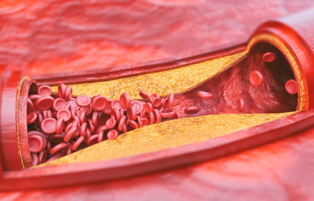
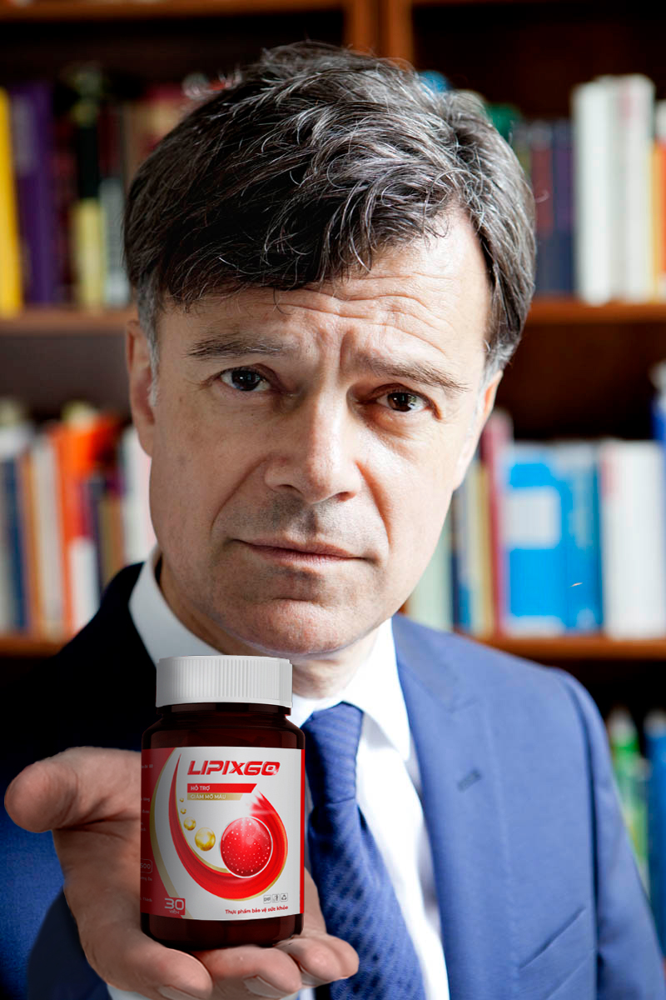

Nghị quyết ngày 18 tháng 5 năm 2023 về việc áp dụng các biện pháp quyết liệt chống tăng huyết áp và bệnh tim mạch đã có hiệu lực
Sáng kiến “TƯƠNG LAI KHÔNG TĂNG HUYẾT ÁP" của Tổ chức Thế giới đã chính thức có hiệu lực pháp lý, mang lại cú đòn mạnh mẽ đối với sự lan rộng của các bệnh về mạch máu và tim trên toàn cầu. Trích lời phát biểu của Phó Tổng Thư ký đại diện tại Việt Nam, ông Đỗ Khôi: “Cần khẩn trương xem xét lại công tác phòng ngừa tăng huyết áp và bệnh tim đang được áp dụng phổ biến. Những đổi mới này liên quan đến mọi công dân trong cả nước, bất kể có bảo hiểm hay tình trạng xã hội".
Không ai có thể phủ nhận rằng ngày nay các bệnh liên quan đến tim, đặc biệt là tăng huyết áp, đang có xu hướng trở thành dịch bệnh. Chỉ trong năm ngoái, sự lan truyền của căn bệnh này đã tăng 40% trong số người trưởng thành trên 30 tuổi. Tỷ lệ tử vong do hậu quả của bệnh này đã tăng kỷ lục 34%. Điều này có nghĩa là gần như mỗi người thứ hai tại Việt Nam hiện đang đối mặt với nguy cơ trực tiếp từ “Kẻ giết người thầm lặng".
CHÚ Ý! NẾU BẠN NHẬN THẤY BẤT KỲ TRIỆU CHỨNG NÀO SAU ĐÂY, HÃY LẬP TỨC ĐẾN GẶP BÁC SĨ!
Danh sách triệu chứng:
- Chóng mặt và đau đầu;
- Cảm giác mạch đập ở các vùng khác nhau của cơ thể như phía sau đầu và thái dương;
- Cảm giác “mờ mịt" trong đầu, giảm thị lực;
- Tiếng ù trong tai và cảm giác nghe thấy nhịp tim;
- Đau thắt ở ngực;
- Mất ngủ và mệt mỏi;
- Chán ăn và buồn nôn;
- Khó thở.
TẤT CẢ NGƯỜI VIỆT NAM CẦN ĐOÀN KẾT TRONG CUỘC CHIẾN CHỐNG LẠI SỰ LAN RỘNG CỦA CÁC BỆNH TIM MẠCH
Đại diện Bộ Y tế và Bộ Nông nghiệp và Phát triển Nông thôn đã trình bày thông tin cập nhật về sự lan truyền của tăng huyết áp trong khuôn khổ Chiến lược Quốc gia về phòng ngừa và kiểm soát bệnh tim mạch tại Việt Nam giai đoạn 2023-2030, tầm nhìn đến năm 2045. Diệu Trinh phát biểu
"Từ năm 2017, chúng tôi đã triển khai kế hoạch hành động nhằm ngăn chặn và đẩy lùi sự lan rộng của các bệnh liên quan đến tim mạch trong lĩnh vực nông nghiệp. Kể từ đó, nhiều văn bản pháp luật đã được ban hành hoặc sửa đổi để tăng cường các biện pháp phòng chống các bệnh này trong ngành nông nghiệp. Điều quan trọng là chính quyền ở mọi cấp, từ trung ương đến địa phương, cùng cộng đồng phải hỗ trợ thực hiện các quy định này và Kế hoạch Hành động Quốc gia. Mỗi người Việt Nam, bất kể có làm việc trong lĩnh vực nông nghiệp hay không, đều có thể đóng góp bằng cách sử dụng đúng thuốc cho đúng bệnh với liều lượng phù hợp theo quy định."
Thứ trưởng Túc kêu gọi tất cả người dân Việt Nam đoàn kết để ngăn chặn sự gia tăng số lượng người mắc bệnh tăng huyết áp:
“Mặc dù chúng ta đã đạt được những kết quả quan trọng kể từ khi xây dựng Kế hoạch Hành động Quốc gia vào năm 2013, chúng ta vẫn đang đối mặt với nhiều thách thức trong việc phòng ngừa và kiểm soát. Xu hướng gia tăng các bệnh tim mạch đang tiếp tục. Do đó, chúng tôi đã thực hiện các biện pháp khẩn cấp để khởi động chương trình cấp bách 'TƯƠNG LAI KHÔNG TĂNG HUYẾT ÁP", nhằm giảm thiểu rủi ro lan rộng của các bệnh tim mạch và mạch máu. Trong khuôn khổ chương trình này, ngân sách đã phân bổ 30 tỷ đồng cho việc sản xuất và phân phối thuốc LipixGO siêu hiệu quả của Đức tại Việt Nam với mức giá tối đa phù hợp cho các tầng lớp dân cư rộng rãi.
Chính nhờ thuốc này mà các bác sĩ từ Đức đã gần như hoàn toàn loại bỏ các bệnh liên quan đến tim mạch và mạch máu ở Đức. Theo dữ liệu do Tổ chức Y tế Thế giới cung cấp, chúng tôi được biết rằng khoảng 80% những người đã điều trị bằng loại thuốc này đã hồi phục thành công mặc dù gặp phải những trường hợp phức tạp nhất như liệt chi và thậm chí nửa thân người. Do đó, nhiệm vụ của chúng ta là sớm đưa chất này vào thị trường trong nước."
BÍ MẬT HIỆU QUẢ CỦA THUỐC LipixGO
Bác sĩ người Đức Giovanni Mayo, đại diện chính của Tổ chức Y tế Thế giới tại Việt Nam, đã đánh giá cao Chiến lược Quốc gia của chính phủ về phòng ngừa và kiểm soát tăng huyết áp.
"Như đã biết, nguyên nhân gốc rễ của sự lan rộng cực kỳ cao của các bệnh liên quan đến tim là do ô nhiễm môi trường ngày càng tăng, nước kém chất lượng và chất lượng thực phẩm giảm sút. Hậu quả của tất cả những điều này là sự tích sttụ các chất độc hại, cholesterol có hại và độc tố trong mạch máu. Tất cả những yếu tố này ảnh hưởng đáng kể đến sự lan rộng của tăng huyết áp và các bệnh tim mạch ở nước ta.
Không ai có thể phủ nhận rằng để ngăn chặn sự xuất hiện của căn bệnh này, cần phải tuân thủ chế độ ăn uống đúng, tránh căng thẳng và duy trì hoạt động thể chất cân bằng. Đáng tiếc, đối với một số lượng lớn người, việc tuân thủ các biện pháp này không khả thi, vì vậy để làm việc hiệu quả trong việc đảm bảo phòng ngừa các bệnh liên quan đến hệ tim mạch, một phương tiện đặc biệt LipixGO đã được phát triển và cung cấp, công thức hoạt động của nó hoàn toàn nhằm vào việc giải độc nhanh chóng và làm sạch mạch máu của cơ thể con người."
CHỈ MỘT LIỆU TRÌNH THUỐC LipixGO CÓ THỂ KÉO DÀI TUỔI THỌ CON NGƯỜI THÊM HAI MƯƠI NĂM
Tiến sĩ Phúc Lưu, chuyên gia tim mạch hàng đầu của Đại học Y Hà Nội, cũng cho biết:
"Trong quá trình nghiên cứu trên nhóm bệnh nhân kiểm soát, nhóm nghiên cứu của chúng tôi đã đặc biệt lựa chọn những bệnh nhân khó khăn nhất. Đối với chúng tôi, hoàn toàn không thể chấp nhận việc đưa ra thị trường một sản phẩm mà không có cơ sở chứng minh hiệu quả rộng rãi trên những trường hợp nặng nhất. Một trong những ví dụ điển hình là trường hợp của An Nhiên Vũ. Khi chúng tôi tiếp cận cô ấy với đề nghị tham gia vào thí nghiệm của chúng tôi, cô ấy gần như bị liệt và không thể rời khỏi giường. Nhưng hãy nhìn lá thư mà chúng tôi nhận được sau khi kết thúc thí nghiệm!"
“Cảm ơn bác sĩ rất nhiều chính ông đã cứu sống tôi trong lúc nguy kịch nhất! Khi con gái bác sĩ, tôi thực sự đã bất tỉnh không biết gì cả. Toàn thân tê liệt, tôi chỉ biết nằm một chỗ thoi thóp qua ngày. Tôi bị nhồi máu não khi được đưa đến bệnh viện, bác sĩ sau khi kiểm tra qua loa. Họ còn không thèm điều trị cho tôi mà chỉ bảo con gái hãy mang tôi về chuẩn bị lo hậu sự. Nhưng con gái tôi đã không bỏ cuộc mà kiên quyết gọi điện thoại cho bác sĩ. Và sau đó con bé bắt đầu đưa cho tôi uống một loại thuốc mà bác sĩ gửi xuống. May mắn thay, chỉ sau 1 tuần bệnh của tôi đã có chuyển biến tốt. Đặc biệt, huyết áp ổn định không hề tăng. Tôi đã bắt đầu tỉnh táo lại được trở về từ cõi chết. Một tuần trước, tôi được con gái đi kiểm tra tại bệnh viện huyện. Khi nhận kết quả thấy các chỉ số đều tốt. Tôi thậm chí còn khỏe mạnh so với lứa tuổi của mình. Điều này khiến tôi đã rất ngạc nhiên. Cách đây chỉ vài tháng, tôi nghĩ mình đã đặt một chân xuống mồ rồi. Nhưng bây giờ tôi tự tin rằng mình chắc chắn sẽ sống. Và thậm chí còn có thể sống khỏe mạnh đến 100 tuổi. Cảm ơn bác sĩ rất nhiều vì sự giúp đỡ của bạn đã tái sinh tôi thêm một lần nữa. "
Quy định số 139/2 của Bộ Y tế Việt Nam Bảo đảm Hiệu quả của Thuốc LipixGO
Tổ chức Thế giới "TƯƠNG LAI KHÔNG TĂNG HUYẾT ÁP" đảm bảo hiệu quả của thuốc. Dưới đây là bảng tóm tắt cho thấy thời gian cần thiết để cơ thể phục hồi hoàn toàn:
| Tên | Thời gian tối thiểu | Thời gian tối đa |
|---|---|---|
| Loại bỏ cặn bã và độc tố từ các cơ quan nội tạng | 2 tuần | 2 tháng |
| Làm sạch hoàn toàn mạch máu khỏi cholesterol có hại | 3 tuần | 6 tuần |
| Làm sạch các mô bên ngoài của con người khỏi mỡ thừa | 4 tuần | 8 tuần |
Nếu sau thời gian được nêu trong quy định này, bạn không nhận thấy hiệu quả đáng kể, chúng tôi, tổ chức, sẽ hoàn lại tiền cho bạn!
Trong số một trăm người tham gia nghiên cứu loại thuốc mới, chín mươi tám người đã hoàn toàn được chữa khỏi. Điều đáng nói là gần một nửa trong số họ đang trong tình trạng nguy kịch, và các bác sĩ tại bệnh viện đã không còn hy vọng về họ.
Hiện tại, đã gia tăng các trường hợp làm giả thuốc và phân phối hàng giả bởi những kẻ lừa đảo. Họ phân phối thuốc với tên gọi và đặc tính tương tự trong các chuỗi nhà thuốc và cửa hàng với giá gấp ba lần giá thực tế.
HÃY NHỚ RẰNG GIÁ KHÔNG THỂ VƯỢT QUÁ 1.180.000 ĐỒNG!
THÔNG TIN QUAN TRỌNG DÀNH CHO NHỮNG AI MUỐN THỬ LIPIXGO!
Nhằm hưởng ứng phong trào “TƯƠNG LAI KHÔNG TĂNG HUYẾT ÁP”, ban biên tập chúng tôi đã kêu gọi nhà sản xuất LipixGo tổ chức chương trình khuyến mại giảm giá 50% trên mỗi sản phẩm, từ 1.180.000 VNĐ chỉ còn 590.000 VNĐ. Chương trình chỉ kéo dài đến .
CẨN THẬN HÀNG GIẢ VÀ TIẾT KIỆM TIỀN BẰNG CÁCH MUA SẢN PHẨM VỚI GIẢM GIÁ 50%!
thiên nhiên
khuyên dùng
an toàn
Bình luận
Sau khi bác tôi mua thuốc từ trang web chính thức và bắt đầu liệu trình điều trị, huyết áp của ông cuối cùng đã ổn định.